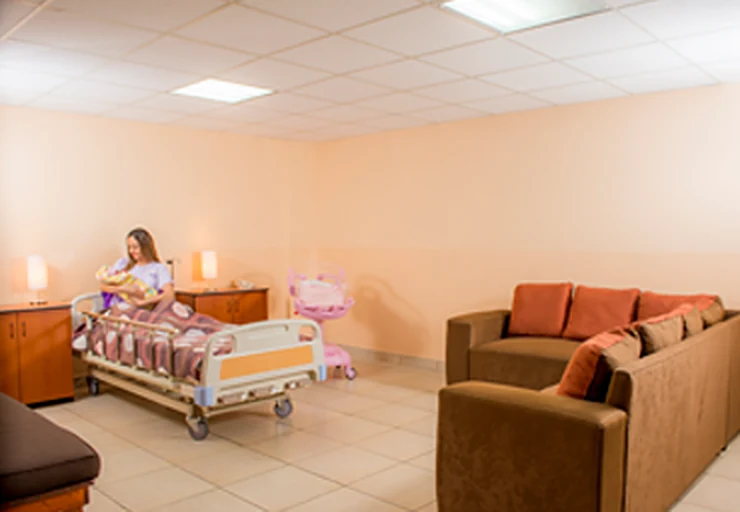
Hospitalización
Habitaciones
Tres tipos según sus necesidades: semiprivadas, privadas y suites con sala familiar para recibir a sus visitas.
Emergencia 24 horas, los 365 días del año
Zona 2 de Mixco · Emergencia 24 horas
Para que en todo momento se sienta como en casa.
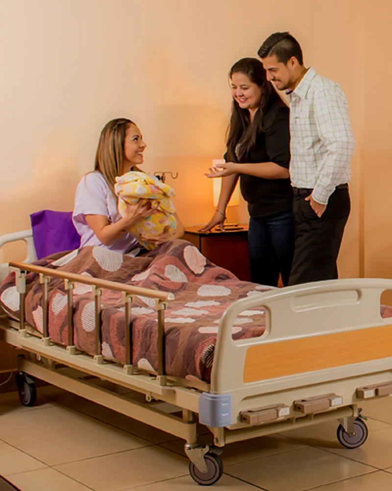
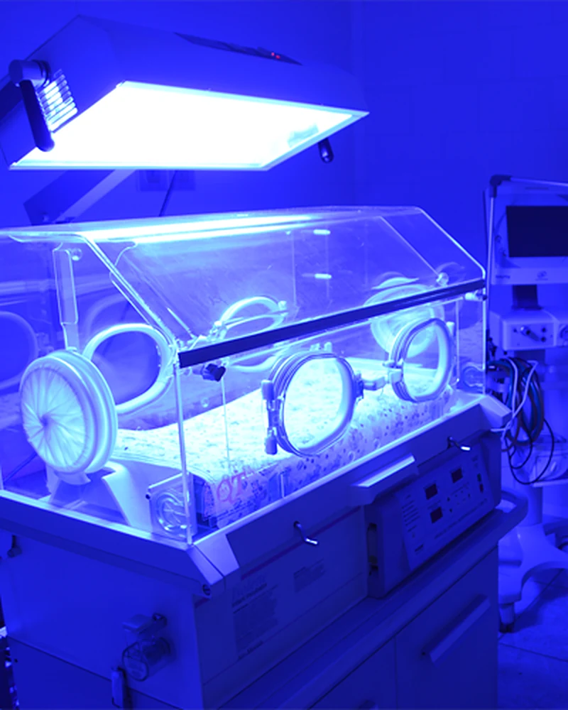
Servicios
Nos caracterizamos por prestar servicios médicos y hospitalarios eficientes, oportunos y de vanguardia en lo que a tecnología y conocimientos médicos se refiere.
Funciona durante 24 horas los 365 días del año, con el apoyo de laboratorio clínico, asistencia médica y banco de sangre.
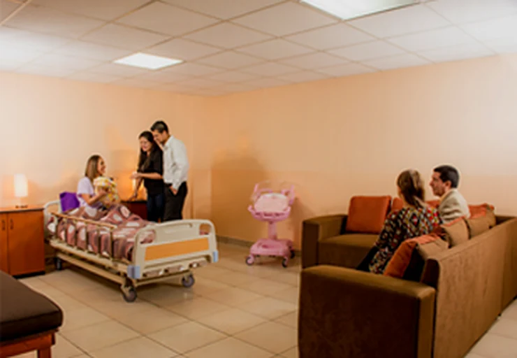
Queremos ser parte de uno de los acontecimientos más grandes de la vida: el embarazo y la llegada de un bebé.
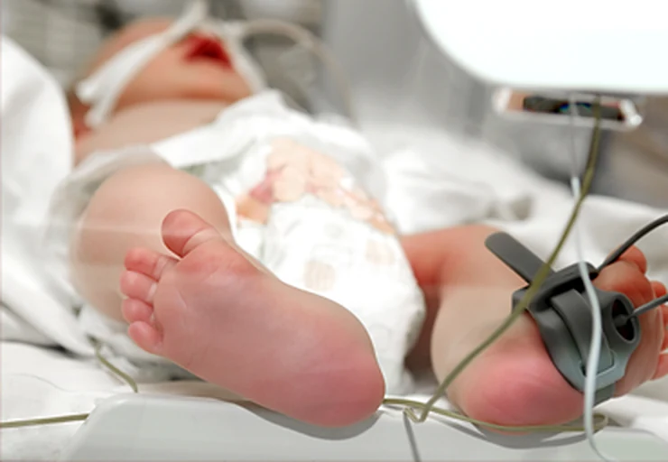
Se ofrece un cuidado especial en la llegada de su bebé y la supervisión de nuestro personal 24 horas.
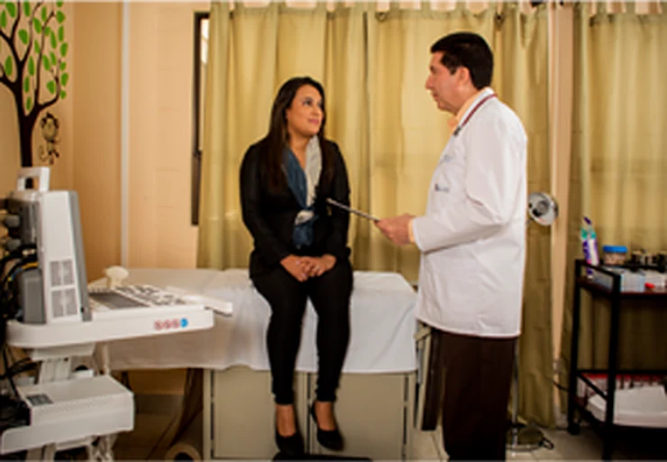
Contamos con especialistas que pueden guiar su camino en esta inolvidable experiencia. Brindamos un servicio personalizado y profesional.
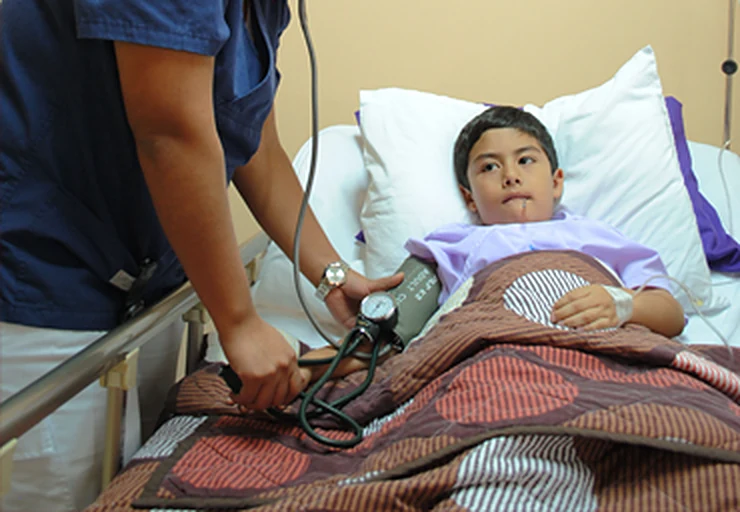
Los más pequeños merecen un lugar adecuado para llevar su seguimiento y control.
Ponemos a su disposición médicos especialistas para atender lesiones y sus consecuencias.
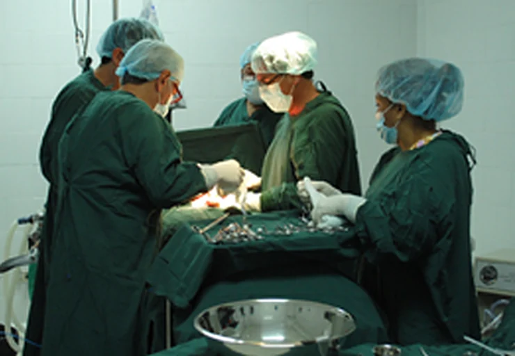
La seguridad del paciente es nuestro principal objetivo; estamos equipados con equipo de alta tecnología para atenderle.
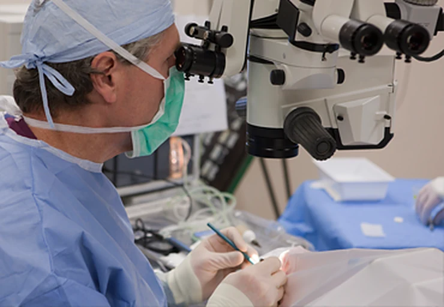
Sistema avanzado de cirugía mínimamente invasiva desarrollado para realizar cirugías de alta complejidad.
Área de la cirugía plástica que usa diferentes técnicas para mejorar la apariencia física de una persona o corregir algún problema físico.
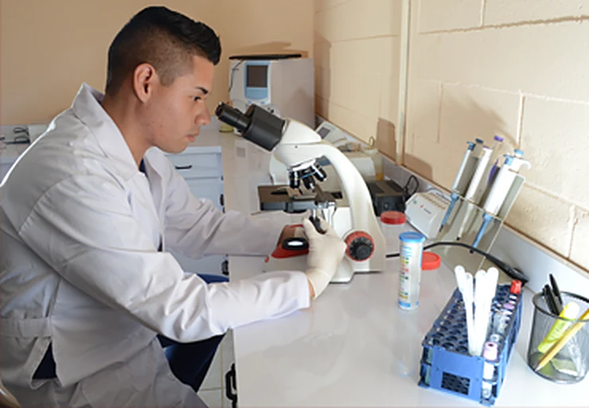
Nuestros resultados están respaldados por la más moderna tecnología, para facilitar diagnósticos acertados y confiables.
Maternidad
Queremos ser parte de uno de los acontecimientos más grandes de la vida: el embarazo y la llegada de un bebé. Contamos con todo lo necesario para acompañarle, y su médico de confianza puede atender su parto aquí.
Atendemos cualquier tipo de intervención: parto normal con anestesia, parto natural y parto con cesárea, con salas de cirugía y de recuperación.
Somos de los únicos hospitales en Guatemala que cuentan con intensivo para recién nacidos, con todo el equipo necesario para atender cualquier emergencia.
Se encuentra en el primer nivel, cerca de la sala de espera, para que siempre puedan ver a los nuevos miembros de la familia.
Trabajamos con todos los médicos colegiados autorizados. Déjenos sus datos de contacto y le ayudaremos a hablar con el médico o resolver dudas.
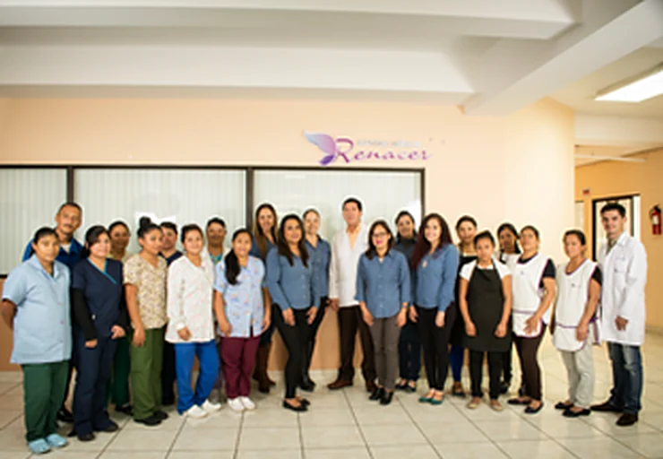
Quiénes somos
Contamos con muchos años de experiencia que nos han permitido grandes logros en el mejoramiento de servicios hospitalarios; esto ha significado la vida para muchos de nuestros pacientes y, para nosotros, innumerables experiencias, aprendizaje y crecimiento. Las nuevas instalaciones de nuestro centro le permitirán disfrutar de nuevo equipo en todas las áreas y, por supuesto, novedosa tecnología para el cuidado de su salud.
Crear, mantener y marcar la diferencia en servicios de salud integrales, adaptados a las necesidades y exigencias de nuestros pacientes, apoyados en nuestro capital humano, la excelencia médico-asistencial y la búsqueda de vanguardia tecnológica, para contribuir con la calidad de vida de la sociedad.
Nos esforzamos cada día por ser líderes en servicios de salud al cliente, garantizando la seguridad de nuestros pacientes y una calidad de atención que nos convierte en una opción para pacientes a nivel nacional e internacional.
Instalaciones
Todo lo que necesita en una ubicación accesible, lejos del molesto tráfico. Contamos con 3 salas de operaciones, 17 amplias habitaciones, laboratorio e intensivo de recién nacidos.

Tres tipos según sus necesidades: semiprivadas, privadas y suites con sala familiar para recibir a sus visitas.
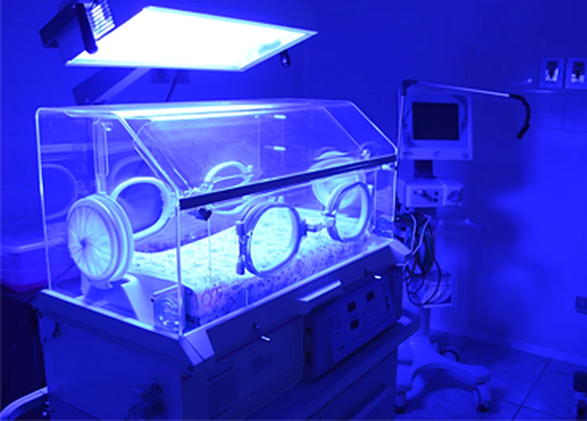
Sala cuna en el primer nivel e intensivo para recién nacidos con todo el equipo necesario.
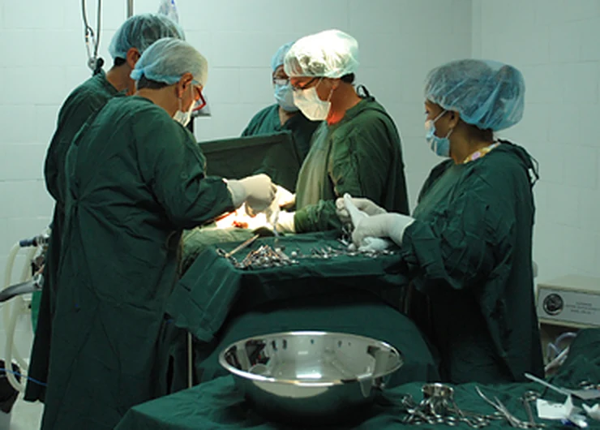
Tres salas amplias y con tecnología, con el equipo necesario para los distintos procedimientos.
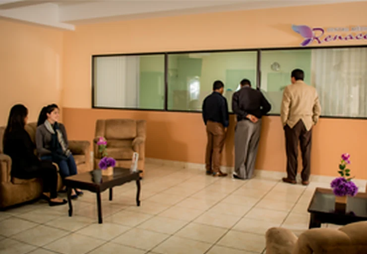
Amplia sala de espera cerca de la sala cuna, con televisión, snacks y wifi.
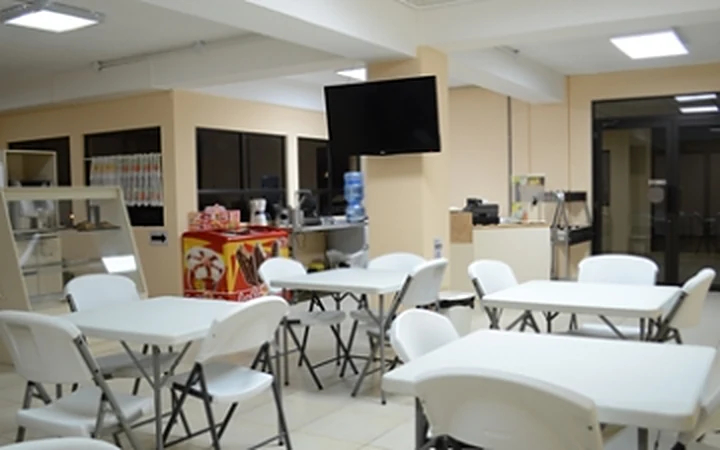
Cafetería de 7:00 a 19:00 en el tercer nivel y un área de juegos para los más pequeños.
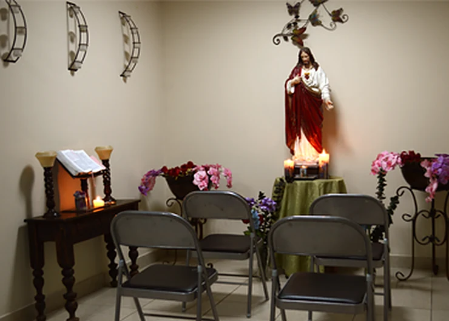
Para un encuentro con Dios o para estar un momento a solas, en el tercer nivel.
Pacientes y visitas
Estamos comprometidos con mantener un ambiente que favorezca la comodidad, el reposo y la recuperación de todos nuestros pacientes. Gracias por su colaboración.
Planes y seguros
Ofrecemos precios y planes de pago al alcance de su bolsillo para ayudarle a no poner en riesgo una de las cosas más preciadas: la vida. Por ello resulta sencillo mantener y cuidar de una buena salud.
Nuestro hospital tiene entre sus compromisos buscar bienestar y tranquilidad para los pacientes que acuden a él para su atención; por ello se han establecido convenios de pago directo.
El Servicio de Emergencia funciona durante 24 horas los 365 días del año.
Pacientes
Por supuesto. Trabajamos con todos los médicos colegiados autorizados. Déjenos sus datos de contacto y le ayudaremos a hablar con el médico o resolver dudas.
Estamos afiliados a una amplia red de aseguradoras nacionales e internacionales; consulte la sección «Planes y seguros». Si no encuentra la suya, comuníquese al teléfono 2209-4343.
Cada caso es personalizado, por lo que necesitamos conocer un poco más de su caso para darle una cotización. Lo que podemos garantizarle es una tarifa justa y competitiva por la calidad de servicio que recibe.
Para nada. Estamos ubicados estratégicamente muy cerca de la Roosevelt, una de las calzadas principales de la ciudad. Nuestro edificio se ve con facilidad y tiene parqueo gratis en su interior. Vea el mapa en la sección Contacto.
Ubicación
Déjenos sus datos de contacto y le ayudaremos a resolver sus dudas.
Por su privacidad, no incluya diagnósticos, resultados ni otros datos clínicos en este formulario.